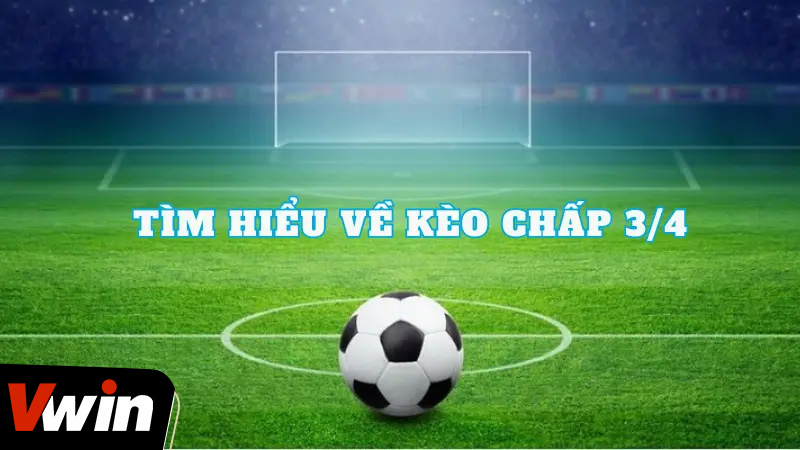
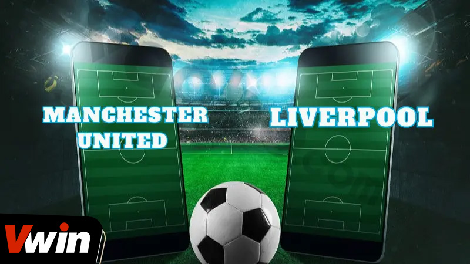

.png)
ĐÃ ĐĂNG TRÊN TRÊN THÁNG BA 11, 2024 BỞI Vwin
Trong thế giới của cá cược bóng đá, một thuật ngữ phổ biến mà bạn có thể gặp phải là kèo chấp 3/4. Dành cho những người mới bắt đầu, điều này có thể là một khái niệm khá xa lạ và khó hiểu. Vậy thì, kèo chấp 3/4 là gì? Hãy cùng khám phá và hiểu rõ hơn về loại kèo này thông qua bài viết dưới đây, cùng sự hỗ trợ từ i9bet.
Loại kèo chấp 3/4, hay còn được gọi là kèo nửa một, kèo 0,5/1 hoặc kèo 0,75, là một trong những loại kèo phổ biến mà bạn có thể gặp trong các trang cá cược bóng đá trực tuyến. Đây là một loại kèo khá phức tạp và đòi hỏi người chơi có sự hiểu biết về cách thức hoạt động của nó.
Tìm Hiểu Về Kèo Chấp 3/4
Thông thường, trong các trận đấu có tỷ lệ kèo 3/4, đội được chấp có khả năng thắng rất cao, thường là khoảng 90%. Điều này có nghĩa là nếu bạn đặt cược cho đội được chấp và họ thắng với cách biệt từ 2 bàn trở lên, bạn sẽ giành chiến thắng.
Trong kèo chấp 3/4, việc xác định kết quả thắng thua dựa vào kết quả tỷ số của hai đội tham gia trong trận đấu. Quy tắc tính thắng thua được mô tả như sau:
Ví Dụ Cụ Thể
Ví Dụ Cụ Thể
Để rõ hơn về cách tính kết quả trong kèo chấp 3/4, hãy xem xét một ví dụ cụ thể:
Trận đấu giữa Manchester United và Liverpool có tỷ lệ kèo chấp 3/4, với Manchester United được chấp. Kết quả cuối cùng của trận đấu là Manchester United chiến thắng với tỷ số 2-1.
Qua ví dụ này, bạn có thể thấy cách tính kết quả trong kèo chấp 3/4 và cách áp dụng nó vào thực tế.
Trong cuộc chiến của những tín đồ cá cược, kèo chấp 3/4 không chỉ là một con số trên tờ kèo, mà là một thách thức đầy mê hoặc, yêu cầu người chơi phải sử dụng những chiến thuật và chiến lược đặc biệt để giành chiến thắng. Dưới đây là những chiến thuật mà người chơi có thể tham khảo:
Nếu đội nằm ở cửa trên có hàng tấn công hiệu quả, trong khi đội ở cửa dưới lại có hàng thủ cực kỳ kém và yếu. Trong tình huống như này, việc chọn kèo trên sẽ là lựa chọn hợp lý.
Chú ý đến thay đổi tỷ lệ ăn
Kèo chấp 3/4 trái có tỷ lệ ăn thường là 0,85 hoặc cao hơn. Do đó, khi theo dõi tiền ăn thường xuyên biến động từ 4 giờ trước khi trận đấu diễn ra, và đặc biệt tăng mạnh vào khoảng 30 phút trước khi trận đấu bắt đầu. Với nhận thức này, việc bắt kèo thường sẽ theo đội chủ nhà.
Người chơi có thể đánh đội ở cửa trên khi đã theo dõi khoảng 15 phút kể từ khi trận đấu diễn ra. Trong trường hợp này, chờ đợi kèo chấp 3/4 xuống còn 1/2 trước khi quay ngược lại và đánh vào cửa trên.
Nếu đội bóng đang thi đấu trên sân nhà là đội của cửa dưới và có đặc điểm hàng tấn công của cả hai đội tương đương nhau, bạn nên chọn kèo cửa dưới.
Nếu sân thi đấu là của đội ở cửa trên, việc lựa chọn cửa trên là phù hợp. Điều này đặc biệt đúng khi đội cửa trên có hàng công mạnh mẽ hơn so với đội cửa dưới.
Bài viết trên là một bài viết cung cấp thông tin về cách tính, chiến lược chơi kèo chấp 3/4. Hy vọng bạn có thể nắm cho mình những thông tin hữu ích nhất. Nếu bạn vẫn còn bất kỳ thắc mắc nào hoặc muốn đóng góp ý kiến của mình, hãy đặt câu hỏi trong phần bình luận dưới đây. Chúng tôi luôn hoan nghênh mọi ý kiến đóng góp từ bạn.
Vwin được công nhận là nhà cái cá cược hợp pháp - an toàn. Vwin còn có trụ sở chính và cá cược trực tiếp tại Phú Quốc.